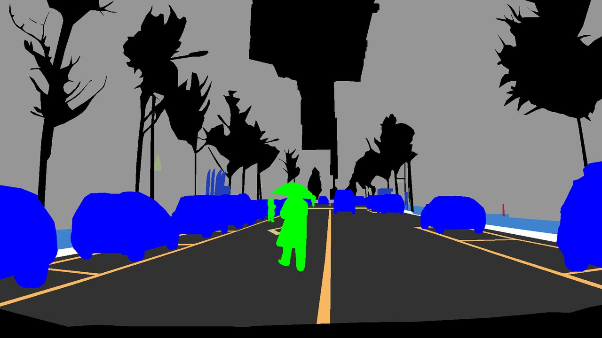

Autonomous Driving AI Challenge 2025 — Semantic Segmentation

▲ Segmentation output on a road scene — vehicles (blue), a pedestrian (green), lane markings (orange).
Problem
Rare road users — pedestrians, bicycles, motorcycles, kickboards — were badly underrepresented. Architecture tuning had plateaued, so I changed the data distribution instead.
Data pipeline
SAM proposes masks → FLUX.1-Fill-dev inpaints rare road users and rain / lens-dirt corner cases → InternImage-H auto-labels them → the pool is paste-augmented on the fly while training GCNet.
Model
GCNet — heavy multi-branch blocks at training time collapse into a single-path light network at inference, so accuracy costs no latency.
Results
- mIoU 53.16 → 56.74 (+3.78 from synthetic data) → 57.04 final.
- 1st of 154 teams; Deputy Prime Minister & Minister of Science and ICT Award.
Slides
19 slides (Korean) · Open the PDF
Links
Ministry of Science and ICT press release (Korean, 14 Nov 2025)